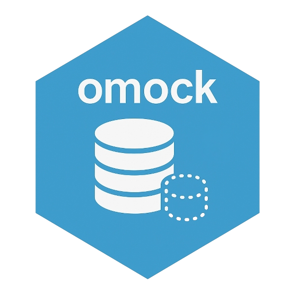

omock: Creation of Mock Observational Medical Outcomes Partnership Common Data Model
Source:R/omock-package.R
omock-package.RdCreates mock data for testing and package development for the Observational Medical Outcomes Partnership common data model. The package offers functions crafted with pipeline-friendly implementation, enabling users to effortlessly include only the necessary tables for their testing needs.
Author
Maintainer: Mike Du mike.du@ndorms.ox.ac.uk (ORCID)
Authors:
Marti Catala marti.catalasabate@ndorms.ox.ac.uk (ORCID)
Edward Burn edward.burn@ndorms.ox.ac.uk (ORCID)
Nuria Mercade-Besora nuria.mercadebesora@ndorms.ox.ac.uk (ORCID)
Xihang Chen xihang.chen@ndorms.ox.ac.uk (ORCID)